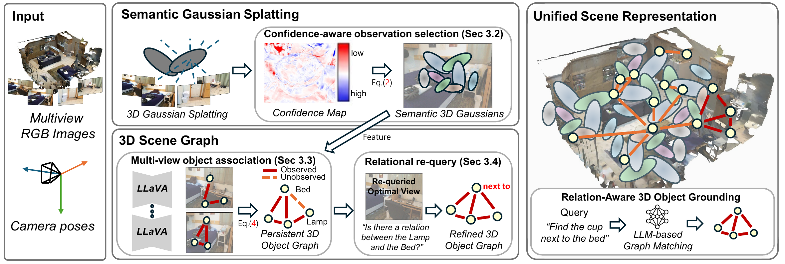
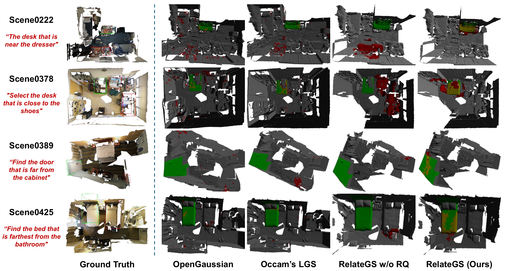

1
Confidence-aware semantic uplifting
Gaussian language features are aggregated from their supporting views, while observations with weak rendering significance are removed to suppress ambiguity from occlusion and limited visibility.
A structured language-aware Gaussian representation that selectively refines the evidence needed for relation-aware 3D visual grounding.
Yonsei University · School of Electrical and Electronic Engineering
†Corresponding author
Language-aware 3D Gaussian Splatting has advanced language-driven 3D scene understanding by incorporating semantic and relational cues into reconstructed scenes. However, relation-aware grounding depends not only on representing this information, but also on whether the underlying scene-side evidence is reliable and sufficient. RelateGS suppresses unreliable observations during semantic feature uplifting, consolidates multi-view object observations into a persistent 3D graph, and uses the graph to identify under-observed relations for targeted re-querying from informative existing frames. On Sr3D+ and Nr3D, RelateGS improves the previous best Acc@0.25 by 7.9 and 1.7 percentage points.
RelateGS improves the scene-side semantic and relational evidence supplied to grounding, rather than changing the downstream graph-matching protocol.

Figure 2. RelateGS first constructs reliable Gaussian semantics, then consolidates objects and relations into a persistent graph before resolving under-observed object pairs.
Gaussian language features are aggregated from their supporting views, while observations with weak rendering significance are removed to suppress ambiguity from occlusion and limited visibility.
Frame-level VLM observations are lifted into 3D and associated across views using spatial, semantic, and scale consistency, yielding persistent objects and accumulated relation evidence.
Nearby object pairs with missing or low-confidence relations are located in the graph; an informative original camera view is retrieved and queried specifically for the deficient relation.
The paper evaluates both the primary grounding task and the semantic evidence underlying the persistent graph.
Relation-aware references from Sr3D+ and Nr3D are resolved with the refined object graph and the same downstream matcher used by prior work.
Gaussian-level language evidence is evaluated on Replica and ScanNet with mIoU and mean class accuracy.
Language-aligned Gaussian features are evaluated on the four LERF-OVS scenes using Acc@0.25, Acc@0.5, and mIoU.
Semantic observation selection and relational refinement are studied to isolate the contribution of each evidence source.

Qualitative results. Relation-aware 3D visual grounding comparison on ScanNet.
RelateGS achieves state-of-the-art overall 3D grounding performance at Acc@0.25 while preserving the same LLM-based graph matching protocol as GaussianGraph.
| Benchmark | Method | Easy A@0.25 | Hard A@0.25 | Overall A@0.25 |
|---|---|---|---|---|
| Sr3D+ | GaussianGraph | 7.7 | 5.6 | 7.4 |
| Sr3D+ | RelateGS | 15.2 | 6.6 | 15.3 |
| Nr3D | GaussianGraph | 12.1 | 6.3 | 8.6 |
| Nr3D | RelateGS | 13.2 | 6.4 | 10.3 |
Acc@0.25 (%). Full Easy, Hard, and overall Acc@0.1/0.25 results are reported in the manuscript.
| Dataset | Method | mIoU | mAcc |
|---|---|---|---|
| Replica | Occam's LGS | 40.21 | 59.97 |
| Replica | RelateGS | 41.11 | 61.51 |
| ScanNet | GaussianGraph | 31.09 | 48.91 |
| ScanNet | RelateGS | 32.70 | 49.04 |
@inproceedings{choi2027relategs,
title = {RelateGS: Reliable Semantic and Relational Evidence for 3D Scene Understanding with Gaussian Splatting},
author = {Choi, Seongjun and Lee, Sangyoun},
booktitle = {Proceedings of the IEEE/CVF Winter Conference on Applications of Computer Vision},
year = {2027}
}